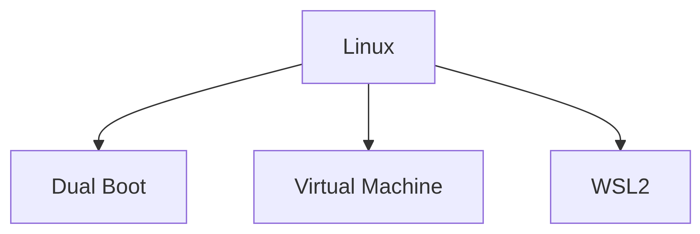
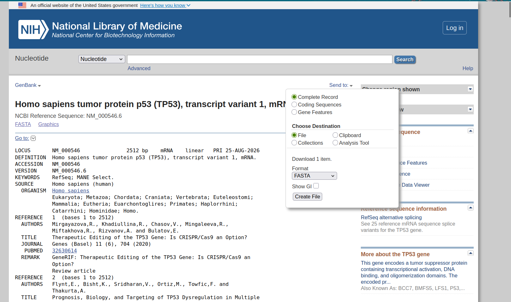
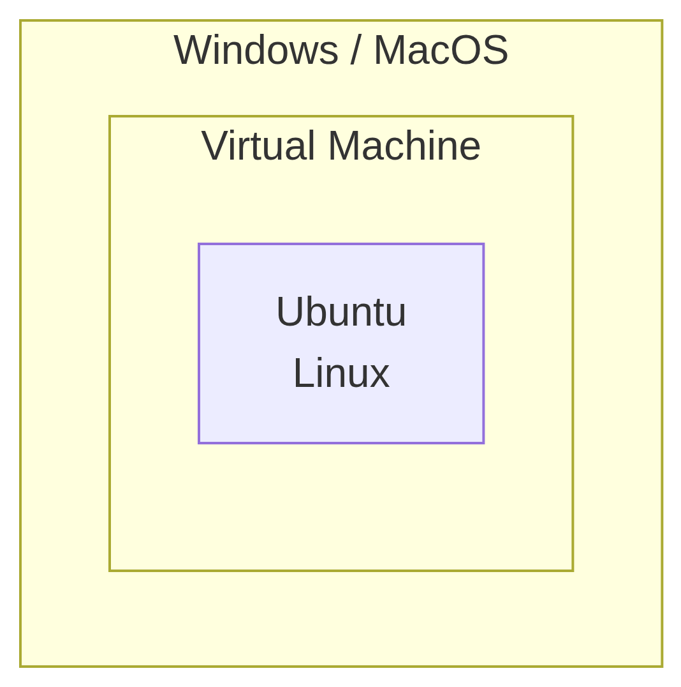
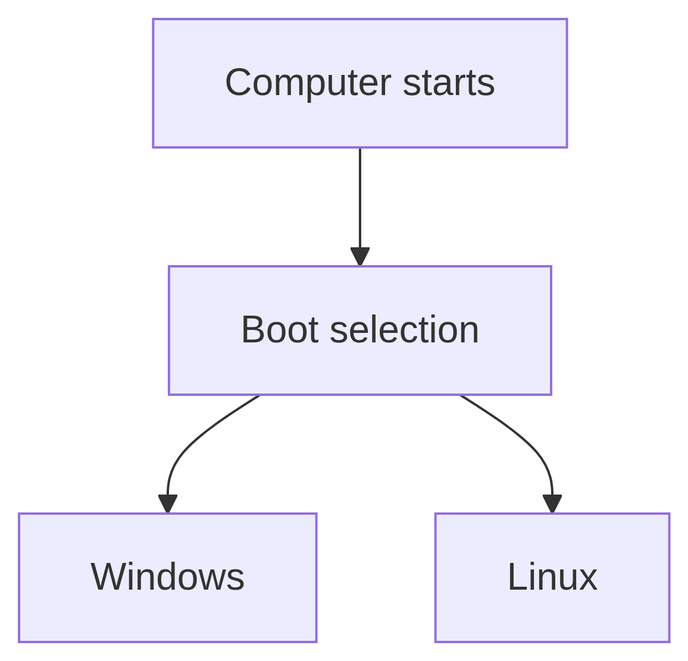
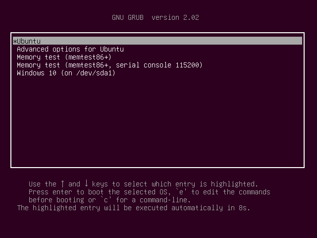
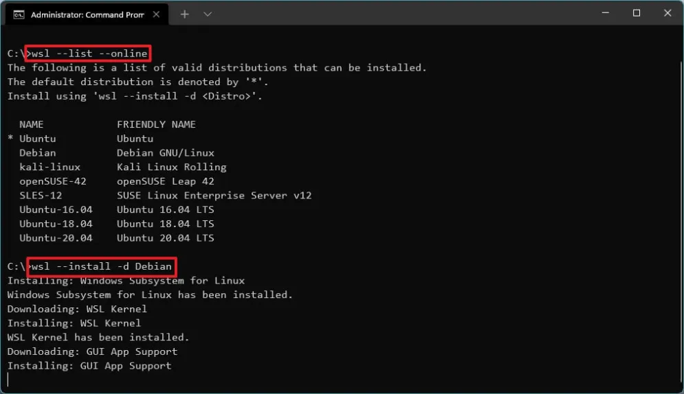
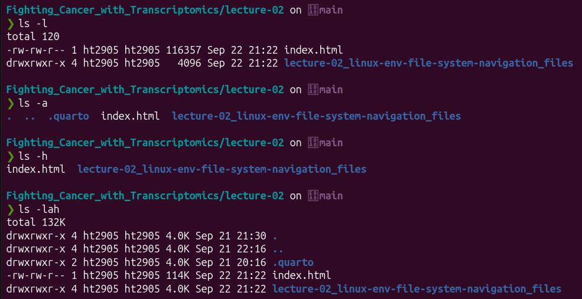
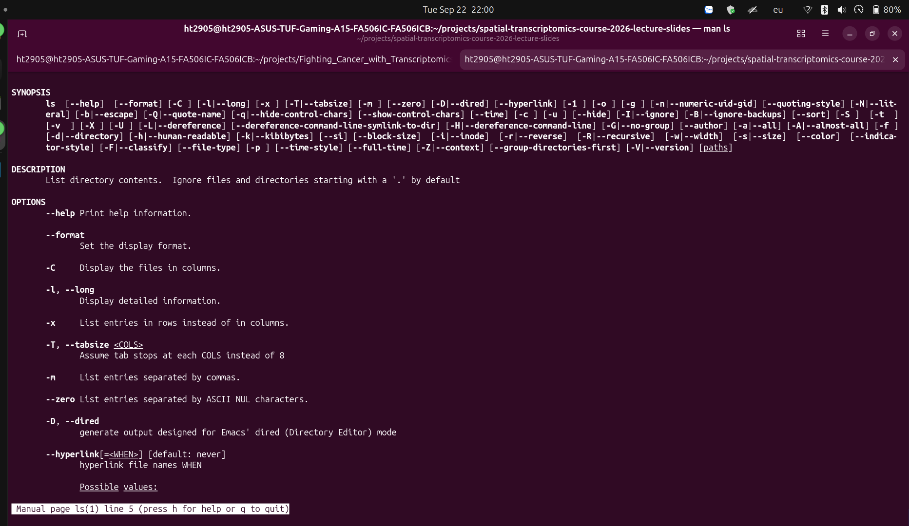
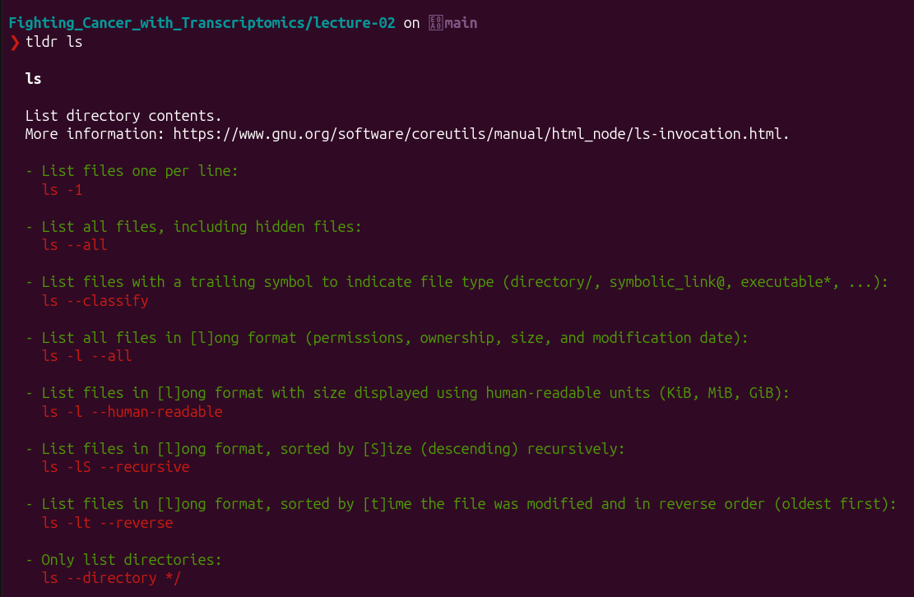
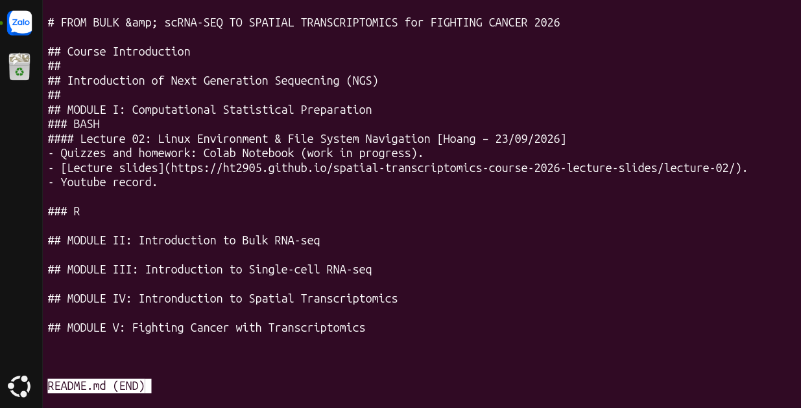

Lecture 02: Linux Environment & File System Navigation
From Bulk & scRNA-seq to Spatial Transcriptomics for Fighting Cancer – 2026
Hoang Tran
2026-09-23
Important Resources for This Session
- Course Github repository: Click here.
- Companion Colab notebook:
placeholder. In-progress work. - Linux Command Line Cheatsheet: Click here.
Lecture 02: Where does this session fit?
Lecture 01
Course vision & Spatial Paradigm
↓
Lecture 02: Linux Environment & File System Navigation ← YOU ARE HERE
↓
Lecture 04
Core Bioinformatic CLI Tools
↓
Lecture 06
Text Stream Processing & Pipeline Automation
Today’s Roadmap
- Why Linux?
- Installing Linux
- Terminal, Shell & Commands
- The Linux Filesystem
- Navigation
- Creating & Manipulating Files
- Inspecting Text Files
- Hidden Files & Useful Habits
- Downloading Data
- Permissions
- Compression & Archiving
- Editing Text Files
- Final Command Cheatsheet
1. Why Linux?
Consider a simple problem in bioinformatics
Download the human TP53 mRNA transcript, variant 1:
With the graphical interface, we might:
- Open the accession page.
- Click Send to → File.
- Choose FASTA format.
- Click Create File.
- Move the downloaded
.fastafile into our project directory.

Problem of scale and reproducibility
This works well for one or a few sequences. But it sounds a bit cumbersome to document and reproduce, doesn’t it?
And what if we need to download dozens or hundreds of accessions?
This is where the CLI (command-line interface) comes in.
Let’s write a reproducible Bash workflow
First, we create and navigate to our project folder:
Then, we can download the FASTA file using NCBI’s EFetch utility:
With the file downloaded, we can inspect its contents:
All these commands can be saved in a script file, such as scripts/tp53_download.sh, and then run with:
Alright, so why Linux? Why not Windows or MacOS?
Bioinformatics workflows are heavily built around Unix/Linux command-line tools.
Commands such as head, cat, mv, cp, grep, awk, curl.

- HPC clusters and remote servers predominantly run Linux.
- Shell scripts make workflows easy to automate, reproduce, and scale.
- Linux provides a native environment for many bioinformatics tools and workflows.
What should you be able to do after 2 hours?
- Navigate: move through Linux directories with absolute and relative paths
- Manage: create, inspect, copy, move, rename, and remove files
- Inspect: examine text-based biological data without dumping huge files
- Work safely: recognize permissions, compression, downloads, and common failure messages
- Apply: complete a small bioinformatics-style file-management workflow
GUI or CLI?
A GUI is useful.
The command line becomes especially useful when work involves:
| Situation | Why CLI helps |
|---|---|
| Large datasets | precise file operations |
| Repeated work | commands are repeatable |
| Remote servers / HPC | terminal access is standard |
| Reproducible workflows | commands can be documented |
| Bioinformatics software | many tools are command-line based |
Note
The point is not “GUI bad, CLI good.”
GUI is good for everyday use and graphics-related work. CLI is good for large datasets and complicated workflows.
2. Installing Linux
What exactly are we installing?
Linux is not one operating system.
A Linux distribution (distro) combines:
- Linux kernel
- system utilities
- software packages
- package manager
- default configuration
Major Linux distributions
| Distribution | Family | Package manager | General character |
|---|---|---|---|
| Ubuntu | Debian | apt |
Beginner-friendly, desktop + server |
| Debian | Debian | apt |
Stable, conservative, highly influential |
| Fedora | Red Hat | dnf |
Modern, community-driven, fast-moving |
| RHEL | Red Hat | dnf |
Enterprise-focused, long-term support |
| Arch Linux | Independent | pacman |
Minimal, customizable, rolling release |
Different package managers
| Distribution | Family | Package manager | General character |
|---|---|---|---|
| Ubuntu | Debian | apt |
Beginner-friendly, desktop + server |
| Debian | Debian | apt |
Stable, conservative, highly influential |
| Fedora | Red Hat | dnf |
Modern, community-driven, fast-moving |
| RHEL | Red Hat | dnf |
Enterprise-focused, long-term support |
| Arch Linux | Independent | pacman |
Minimal, customizable, rolling release |
Ubuntu: the one you will see in this course
Ubuntu is my primary Linux distro.
For this course, Ubuntu will be the default reference environment for demonstrations.
- beginner-friendly
- large software ecosystem
- extensive documentation
- common on personal computers and servers
- straightforward package management with
aptand Snaps
Ubuntu is based on Debian
Both Ubuntu and Debian use the .deb package format and the apt package-management system.
Example:
Note
You will see sudo apt ... repeatedly when installing bioinformatics software and Linux utilities. It is the main way to install packages on Ubuntu.
Ubuntu is not a reskin of Debian
Ubuntu is based on Debian — but it’s its own distribution.
| Debian | Ubuntu |
|---|---|
| Own releases | Own release cycle |
| Own repositories | Ubuntu repositories |
| Debian defaults | Ubuntu defaults |
| Debian community | Ubuntu + Canonical |
Ubuntu also adds its own technologies, such as Snap:
How can I run Linux?
Knowing which distribution you want is only half the question.
You also need to decide how Linux will run on your computer:
Method 1: Virtual Machine
A virtual machine runs another operating system inside your current operating system.

Examples of a virtual machine:
- VirtualBox
- VMware
- Hyper-V
- GNOME Boxes
VM: Low risk, but with significant overhead

| Advantages | Disadvantages |
|---|---|
| Low risk to the host system | Consumes additional RAM and CPU |
| Linux and Windows / MacOS can run simultaneously | Requires additional storage |
| Good for experimentation | Not the full Linux experience |
Method 2: Dual-Boot
A dual-boot system has two operating systems installed on the same computer.

| Advantages | Disadvantages |
|---|---|
| Linux runs directly on the hardware | Requires rebooting to switch |
| Excellent performance | Partitioning requires care |
| Full Linux desktop experience | Installation mistakes can affect existing data |
Dual-Booting Ubuntu: A Brief Guide

The installation process is actually quite straightforward. First, download the Ubuntu ISO image — most likely the latest LTS (long-term support) version.
Then, write the ISO image to a USB drive using an app such as Ventoy or Rufus.
Finally, boot from the USB drive to start the Ubuntu live environment, then follow the on-screen instructions to install Ubuntu alongside your existing operating system.
Warning
Make sure you have enough free disk space for Ubuntu and back up important data before modifying your partitions.
Method 3: WSL2 (Windows Subsystem for Linux 2)
WSL2 uses a lightweight virtual-machine architecture with a real Linux kernel. It allows Linux environments to run alongside Windows, accessible through Windows Terminal. The command-line experience is similar to working with an HPC cluster via SSH.

WSL2 vs traditional virtual machines
Compared with a traditional virtual machine, WSL2 has fast startup and very low overhead. It provides close integration between Windows and Linux, allowing you to use Linux tools alongside your normal Windows applications.
Windows drives are accessible from Linux under paths such as /mnt/c/, while Linux files can also be accessed from Windows through \\wsl.localhost.
Installing WSL2
- On Windows 10/11, open PowerShell as Administrator and run:
- Restart Windows when prompted.
- Open Ubuntu from the Start menu.
- Create your Linux username and password.
- Update Ubuntu:
3. Terminal, Shell, Command
Three things beginners often mix up
Terminal → gives you a place to type
↓
Shell (e.g., Bash, Zsh) → interprets what you type
↓
Command / program → performs an operation
↓
Operating system + filesystem
Note
Terminal ≠ shell ≠ command
Where am I? Use: pwd
Print working directory
What is here? Use: ls
List all files and folders under a specified directory
Useful flags for ls
Useful variants:
Compare these outputs:

Where should I go? Use: cd
cd: change directory.
A reliable beginner loop:
Which user am I? Use: whoami
Print the current username. Self-explanatory.
This matters especially on shared systems where:
- several people use the same server;
- permissions depend on the account;
- file ownership affects what you can change.
Command anatomy
Example:
Need a built-in manual? Try man
Simply type:

Think man is too verbose? Use tldr
man provides detailed documentation, but sometimes you just want a few practical examples.
For that, you can use tldr. tldr is really useful, but it isn’t shipped with Ubuntu by default.
To install tldr on Ubuntu:
After that, just type:
Compare this output with that of man:

less vs. man
After that, just type:
Compare this output with that of man:
Our Teaching Sandbox
Google Colab
Or:
%%bashis used to mark a cell as a Bash script. It is not a command itself.!is used to mark a line as a shell command.
Warning
Colab is a temporary teaching environment.
Do not treat a runtime as permanent storage.
4. The Linux Filesystem
/ = filesystem root
Windows commonly uses drive letters like C: and D:
Linux presents one filesystem tree rooted at /. We often think of it as a tree with branches and leaves.
Note
As a bioinformatician, you will spend most of your time working in your $HOME directory (/home/<user>), not the filesystem root (/).
Where is my home?
The current user’s home directory is usually written as: ~
If the username is ht2905:
Therefore ~ is a shortcut for /home/ht2905.
The exact path varies by machine.
Four symbols worth memorizing
| Symbol | Meaning |
|---|---|
/ |
filesystem root |
~ |
current user’s home |
. |
current directory |
.. |
parent directory |
Note
How did these symbols come to be?
It would be tedious and impractical if Unix/Linux users had to type out long paths every time. These symbols provide convenient shorthand for locations that users refer to frequently.
Absolute or relative?
Absolute path
Starts at /.
Relative path
Starts from where you are now.
Note
An absolute path is anchored to /.
A relative path is anchored to the current working directory.
Same file, different address
You are here:
Then:
and:
refer to the same file.
Important
For more practice, see the companion Colab notebook for this lecture, available in the course Github repository.
5. Navigation
How do I navigate deliberately?
Think of navigation as three questions:
Where am I? →
pwdWhat is here? →
lsWhere do I want to go? →
cd
Tab completion is your friend
Instead of:
type:
Bash can complete filenames and directory names.
If the completion is ambiguous, press Tab twice to see matches.
Organize your project!
A predictable project is easier to understand and automate:
Note
Why does project structure matter?
A good structure is part of reproducibility. You should be able to return to your project months or years later and immediately understand where things are and what each file or folder is for.
6. Creating and Manipulating Files
Create a directory with mkdir
Nested directories:
Check:
Create an empty file with touch
Update a file’s timestamp, or create it if it does not exist
Then:
Note
touch is fundamentally about timestamps. We use it when we want to update a file’s timestamp.
Creating an empty file is a common side effect when the file does not already exist.
Copy a file with cp
Copy into a directory:
Copy a directory recursively:
Move files and folders around with mv
Move:
Rename:
Note
mv changes the path or name.
Remove files and folders with rm
Ask first:
Recursive removal: be careful!
Ask first:
Recursive removal:
Warning
rm is not the same as moving something to a graphical Trash folder like Windows Recycle Bin or macOS Trash. It is permanent.
Slow down before deleting. For a more cautious approach, use rm -i to confirm each deletion, or install trash-cli for a more conventional “move to trash” behavior.
Summary: The Mental Model
7. Inspecting Text Files
Before you analyze the data… inspect it.
Common text-based formats include:
- FASTA
- FASTQ
- SAM
- GTF / GFF
- BED
- TSV / CSV
- logs
- configuration files
Which tool should I use?
- Small file? →
cat - Extract the beginning? →
head - Extract the end? →
tail - Large file? →
less
cat: print a file
Good for small files.
Not a good idea for:
Warning
Do not casually print huge sequencing files to the terminal.
Tip
For those familiar with coding, cat is short for “concatenate.”
head: extract the beginning
Exactly 20 lines:
tail: extract the end
Exactly 20 lines:
wc: Count lines, words, and bytes
A simplified FASTQ record:
1 FASTQ record = 4 lines
So:
gives the total number of lines.
For a well-formed FASTQ file:
Example: 4,000,000 lines → 1,000,000 reads
less: Inspect without dumping everything
Useful keys:

8. Hidden Files and Useful Habits
What makes a file “hidden”?
Names beginning with . are normally hidden from plain ls.
Examples:
Can I see the file size?
Compare:
with:
Human-readable sizes might look like:
9. Downloading Data
wget: Download from a URL
Example:
Then verify:
wget vs curl
wget
Commonly used as a downloader.
curl
General-purpose data transfer tool.
Save using the remote filename:
Display or save?
This:
usually prints the response.
This:
saves the file.
Bonus: rsync, where does it fit?
Typical server transfer:
Conceptually:
Useful for:
- repeated transfers;
- large datasets;
- synchronization;
- selected file metadata preservation.
10. Permissions
Why can two users get different results?
Linux tracks:
A long listing might begin:
Read it as three blocks:
Three permissions
| Symbol | Meaning |
|---|---|
r |
read |
w |
write |
x |
execute |
- |
not granted |
Example:
means:
Files and directories are different
For a file:
For a directory:
Need to make a script executable? Use chmod
Inspect:
Symbolic modes also exist:
Permissions or ownership?
Basic ownership syntax:
In managed servers, ownership is often controlled by administrators.
Warning
Do not run random recursive ownership commands such as chown -R ... on a system you do not fully understand.
11. Compression and Archiving
Why does sequencing data end in .gz?
Instead of:
you often see:
gzip compression reduces storage and transfer costs.
Note
Compression ≠ archiving
Compression changes one file
Compress:
Usually becomes:
Decompress:
Check:
Archiving bundles many files: tar
Create:
Extract:
Compressed archive:
Extract:
How do I decode tar.gz?
Note
tar.gz = archive + gzip compression
12. Editing Text Files
What if VS Code isn’t available? Use nano
Essential shortcuts:
Note
Why know it?
On a remote server, your preferred GUI editor may not be available. As a bioinformatician or data scientist, you will often work with institutional HPC clusters via SSH, where the terminal is your main interface.
Or an even more powerful alternative: vim
Vim is a powerful modal text editor. It can be extremely efficient, provided you can remember its many commands.
Unlike nano:
The basic workflow:
Want to learn vim?
A built-in interactive tutorial that teaches Vim’s core commands.
Note
Why know it?
Vim is commonly available on Linux servers and other remote environments.
You do not need to become a Vim expert to use Linux effectively. As sad and shameful as it sounds, Vim and I just don’t click :(
13. Final Command Cheatsheet
Navigation
Help & Shell Utilities
Files & Directories
Inspecting Text Files
Useful less keys:
Downloading & Transferring
Permissions & Ownership
Compression & Archiving
Remember:
Software Installation on Ubuntu
Examples:
Text Editors
Essential nano shortcuts:
Essential Vim commands taught today: